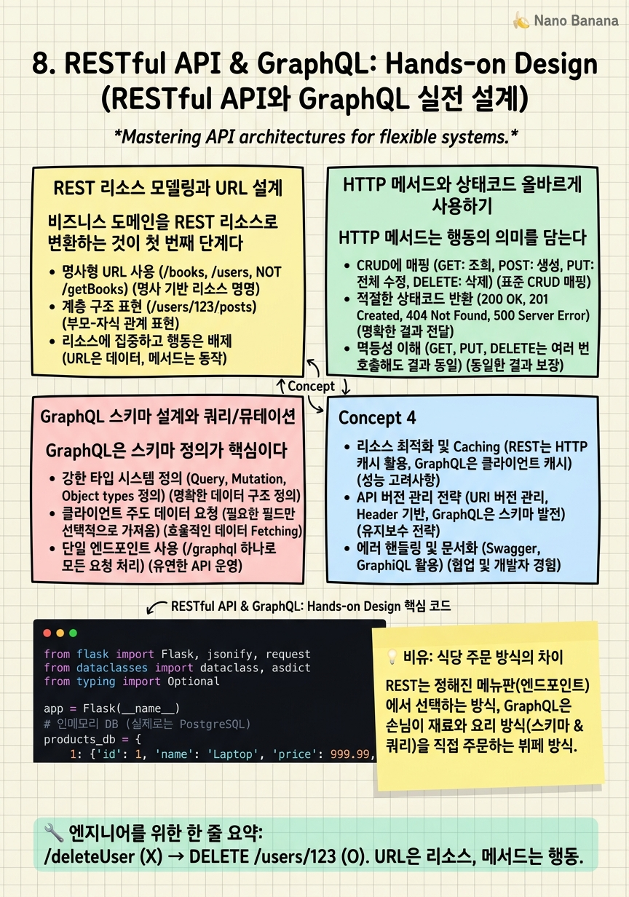

RESTful API & GraphQL: Hands-on Design

🎯 학습 목표
- 비즈니스 도메인을 REST 리소스로 모델링할 수 있다
- 올바른 HTTP 메서드와 상태코드를 선택할 수 있다
- 필터링, 정렬, 페이지네이션을 REST API에 적용할 수 있다
- GraphQL 스키마를 정의하고 쿼리/뮤테이션을 작성할 수 있다
- REST와 GraphQL 중 상황에 맞는 것을 선택하고 이유를 설명할 수 있다
이론을 이해했다면 이제 실제로 API를 설계해보자. REST API 설계에서 가장 흔한 실수는 동사를 URL에 사용하는 것(/getUser, /deletePost)이다. REST는 리소스(명사) 기반이고, HTTP 메서드(동사)로 행동을 표현한다. GET /users/123이 '사용자 123 조회'다. DELETE /users/123이 '사용자 123 삭제'다.
GraphQL은 완전히 다른 사고방식이 필요하다. 엔드포인트 대신 타입 시스템(Schema)을 먼저 설계한다. 그리고 클라이언트가 쿼리 언어로 원하는 것을 정확히 요청한다. 서버는 스키마에 정의된 타입과 리졸버(Resolver)로 응답한다.
두 스타일 모두 실제 프로젝트에서 만날 것이다. REST는 공개 API와 단순한 CRUD 서비스에, GraphQL은 복잡한 데이터 관계와 여러 클라이언트 타입이 있는 경우에 더 적합하다. 이 챕터에서는 두 스타일 모두 실전 수준으로 설계하는 방법을 배운다.
핵심 내용
REST 리소스 모델링과 URL 설계
비즈니스 도메인을 REST 리소스로 변환하는 것이 첫 번째 단계다. 이커머스 앱을 예로 들어보자.
비즈니스 도메인: 고객(Customer), 상품(Product), 주문(Order), 리뷰(Review)
REST 리소스로 변환:
- /api/v1/products — 상품 컬렉션
- /api/v1/products/{id} — 특정 상품
- /api/v1/products/{id}/reviews — 특정 상품의 리뷰
- /api/v1/orders — 주문 컬렉션
- /api/v1/users/{id}/orders — 특정 사용자의 주문
중요한 규칙들:
- 항상 복수형 명사 사용: /products (O), /product (X)
- 동사 사용 금지: /getProducts (X), /deleteUser (X)
- 계층 관계는 중첩 표현: /products/{id}/reviews
- 단, 3단계 이상 중첩은 피한다: /users/{id}/orders/{id}/items/{id} (X)
필터링, 정렬, 페이지네이션: 쿼리 파라미터로 처리한다.
`
GET /products?category=electronics&in_stock=true&sort=price_asc&page=2&limit=20
`
이 단일 요청으로 '전자제품 카테고리에서 재고 있는 상품을 가격 오름차순으로 2페이지(20개씩)'를 조회한다.
HTTP 메서드와 상태코드 올바르게 사용하기
HTTP 메서드는 행동의 의미를 담는다. 올바른 메서드 선택이 API를 예측 가능하게 만든다.
| 메서드 | 목적 | 멱등성 | 요청 바디 | |---|---|---|---| | GET | 조회 | O | X | | POST | 생성 | X | O | | PUT | 전체 교체 | O | O | | PATCH | 부분 수정 | O | O | | DELETE | 삭제 | O | X |
멱등성(Idempotency) = 같은 요청을 N번 보내도 결과가 동일한 특성. DELETE /users/123을 두 번 보내면 두 번 모두 '삭제됨'이다. POST /users를 두 번 보내면 두 명이 생성된다 — 멱등적이지 않다.
PUT vs PATCH: PUT은 리소스 전체를 교체한다. 사용자의 이름만 바꾸고 싶어도 모든 필드를 보내야 한다. PATCH는 보낸 필드만 수정한다. 이름 변경 시 {'name': 'Bob'}만 보내면 나머지 필드는 그대로다.
상태 코드 예시:
- POST /users 성공 → 201 Created + Location: /users/456
- GET /users/999 (없는 사용자) → 404 Not Found
- PUT /users/123 권한 없음 → 403 Forbidden
- POST /users 잘못된 이메일 형식 → 422 Unprocessable Entity
GraphQL 스키마 설계와 쿼리/뮤테이션
GraphQL은 스키마 정의가 핵심이다. 스키마는 클라이언트와 서버 사이의 계약이다.
타입 시스템 예시:
`graphql
type User {
id: ID!
name: String!
email: String!
posts: [Post!]!
}
type Post { id: ID! title: String! body: String! author: User! }
type Query { user(id: ID!): User posts(first: Int, after: String): PostConnection! }
type Mutation {
createPost(title: String!, body: String!): Post!
updatePost(id: ID!, title: String): Post!
}
`
클라이언트 쿼리 — 필요한 것만 정확히:
`graphql
query {
user(id: "123") {
name # email은 이 화면에서 불필요
posts(first: 5) {
title # body는 목록에서 불필요
}
}
}
`
GraphQL 에러 처리의 특이점: 항상 200 OK를 반환하고, errors 필드에 에러를 담는다. 이는 REST와 다른 방식으로, 클라이언트가 항상 errors 필드를 확인해야 한다.
💡 비유로 이해하기
REST API는 코스 요리 메뉴다. '에피타이저', '메인 코스', '디저트'라는 명확한 카테고리와 선택지가 있다. 각 코스는 별도의 접시(엔드포인트)로 나온다. 구조가 명확하고 예측 가능하다. 단, 이 메뉴에서 살짝 다른 조합을 원하면 못 한다.
GraphQL은 맞춤형 도시락이다. '닭고기, 브로콜리, 밥 조금, 소스 없이'라고 정확히 주문할 수 있다. 불필요한 음식은 받지 않는다. 여러 요리를 한 번에 주문할 수 있다. 자유도가 높지만 주문 자체가 복잡해질 수 있다.
REST의 오버페칭은 '메인 코스 스테이크를 시켰더니 사이드 샐러드, 빵, 수프도 자동으로 나오는 것'이다. 필요 없는 음식도 받아야 한다. GraphQL은 딱 원하는 것만 주문할 수 있어 테이블이 깔끔하다.
💻 코드 예시
프로덕션 수준의 REST API를 구현해 보자. 올바른 HTTP 메서드, 상태코드, 페이지네이션, 에러 처리를 모두 포함한다.
from flask import Flask, jsonify, request
from dataclasses import dataclass, asdict
from typing import Optional
app = Flask(__name__)
# 인메모리 DB (실제로는 PostgreSQL)
products_db = {
1: {'id': 1, 'name': 'Laptop', 'price': 999.99, 'stock': 50},
2: {'id': 2, 'name': 'Mouse', 'price': 29.99, 'stock': 200},
}
next_id = 3
@app.route('/api/v1/products', methods=['GET'])
def list_products():
"""상품 목록 조회 (필터링 + 페이지네이션)"""
# 쿼리 파라미터로 필터링
min_price = request.args.get('min_price', type=float)
in_stock = request.args.get('in_stock', type=bool)
page = request.args.get('page', 1, type=int)
limit = min(request.args.get('limit', 20, type=int), 100)
items = list(products_db.values())
if min_price:
items = [p for p in items if p['price'] >= min_price]
if in_stock:
items = [p for p in items if p['stock'] > 0]
total = len(items)
start = (page - 1) * limit
paginated = items[start:start + limit]
return jsonify({'data': paginated, 'total': total, 'page': page, 'limit': limit}), 200
@app.route('/api/v1/products', methods=['POST'])
def create_product():
"""상품 생성"""
global next_id
data = request.json
# 입력 검증 (보안 원칙)
if not data or 'name' not in data or 'price' not in data:
return jsonify({'error': 'name and price are required'}), 400
if data['price'] < 0:
return jsonify({'error': 'price must be non-negative'}), 422
product = {'id': next_id, 'name': data['name'],
'price': data['price'], 'stock': data.get('stock', 0)}
products_db[next_id] = product
next_id += 1
# 201 Created + Location 헤더
response = jsonify(product)
response.status_code = 201
response.headers['Location'] = f'/api/v1/products/{product["id"]}'
return responsemin(limit, 100)으로 클라이언트가 과도한 데이터를 요청하는 것을 방지한다. POST 응답에 201 Created와 Location 헤더를 포함하는 것이 REST 표준이다 — 클라이언트가 새로 생성된 리소스의 URL을 바로 알 수 있다. 입력 검증에서 price < 0은 422 Unprocessable Entity로 처리한다 — 문법적으로는 올바른 JSON이지만 비즈니스 규칙상 유효하지 않은 경우다.
🏭 현업에서의 평가
✅ 시니어가 보는 것
- URL에 명사만 사용하고 동사는 HTTP 메서드로 표현하는가
- 적절한 상태코드를 사용하는가 (201 vs 200, 422 vs 400)
- 페이지네이션 없이 전체 컬렉션을 반환하지 않는가
- 에러 응답에 충분한 정보를 포함하는가 (에러 코드, 메시지, 필드)
⚠️ 레드 플래그
- 모든 에러에 200 OK 반환 (GraphQL이 아닌 REST에서)
- DELETE 요청에 바디 포함
- 비밀번호나 민감 정보를 GET 요청 URL에 포함
- 페이지네이션 없는 목록 API
🎤 예상 인터뷰 질문
- 대규모 데이터셋의 페이지네이션에서 offset 기반 vs cursor 기반의 차이와 각각의 장단점은?
- REST API에서 부분 업데이트(PATCH)를 설계할 때 어떤 전략을 쓰겠습니까? null과 undefined를 어떻게 구분하겠습니까?
- GraphQL을 쓰면 REST가 필요 없을까요? 어떤 상황에서 REST가 여전히 더 나은가요?
✨ 핵심 요약
명사 URL, 동사 메서드
/deleteUser (X) → DELETE /users/123 (O). URL은 리소스, 메서드는 행동.
복수형 명사 필수
/product (X) → /products (O). REST 컨벤션.
201 Created + Location
POST 성공 시 201과 Location 헤더로 새 리소스 URL을 알려준다.
PUT vs PATCH
PUT은 전체 교체, PATCH는 부분 수정. 대부분의 업데이트에는 PATCH가 적합.
페이지네이션 항상
limit + offset 또는 cursor 기반. cursor는 실시간 데이터 피드에 더 적합.
GraphQL의 오버페칭 해결
단일 엔드포인트에서 필요한 필드만 지정. 네트워크 왕복 횟수와 페이로드 크기 모두 감소.
GraphQL 에러는 200 OK
REST와 달리 GraphQL은 에러도 200 OK로 반환하고 errors 필드에 담는다.